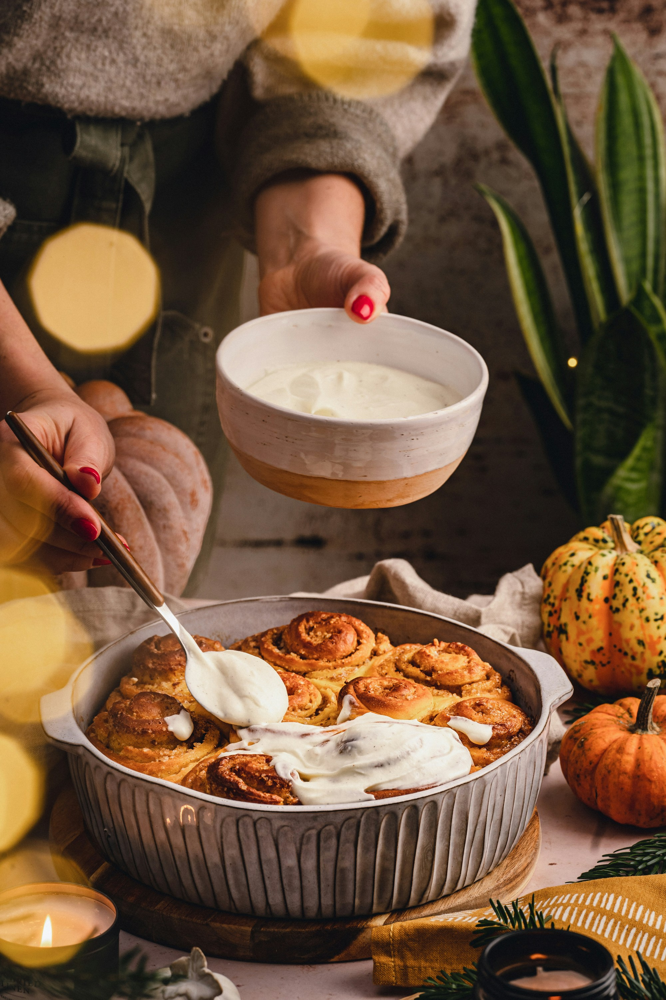
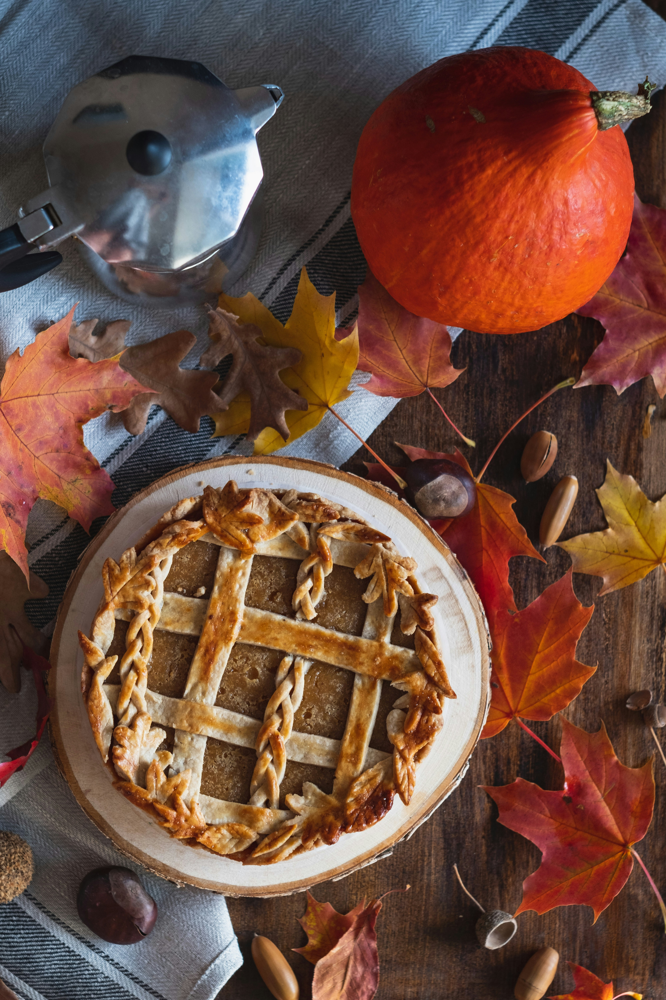
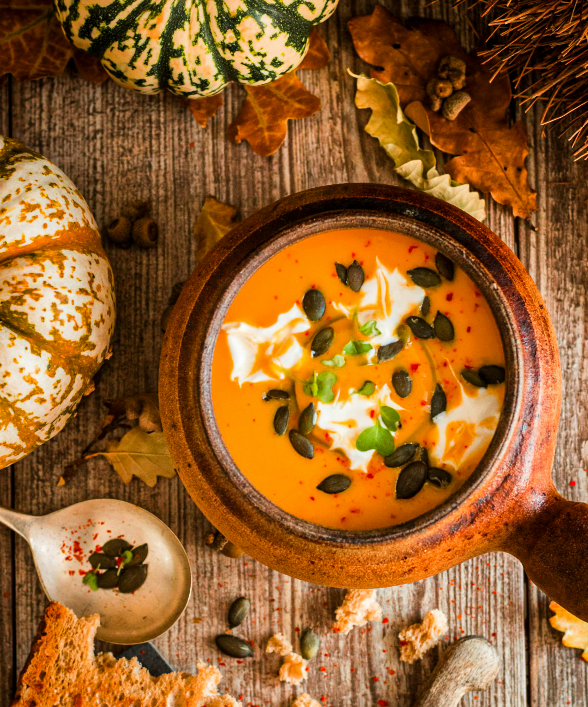
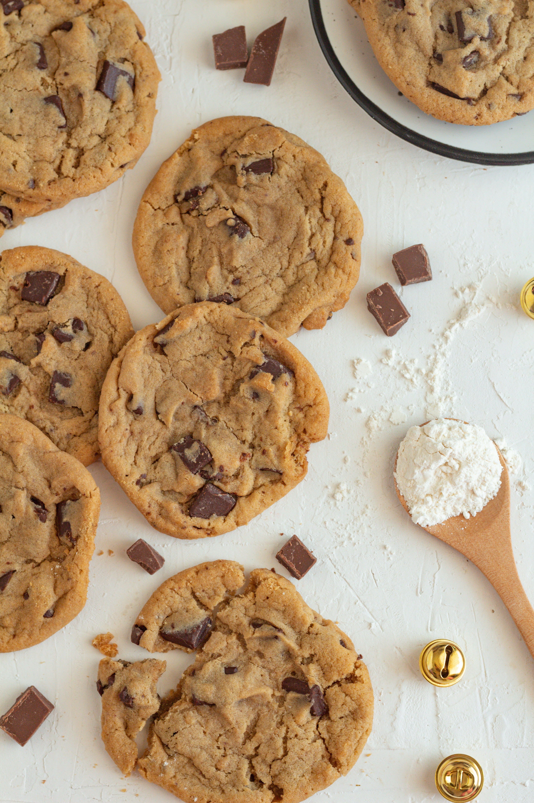

Cinamon rolls
Des rolls moelleux et parfumés à la cannelle, nappés d'un glaçage crémeux : un délice réconfortant à déguster à tout moment de la journée.

Des rolls moelleux et parfumés à la cannelle, nappés d'un glaçage crémeux : un délice réconfortant à déguster à tout moment de la journée.

Une tarte fondante et parfumée aux épices d'automne, avec une pâte croustillante : le dessert idéal pour les journées fraîches.

Une soupe veloutée et réconfortante, parfaite pour les soirées d'automne, avec une touche de crème fraîche et d'épices douces.

Croustillants à l'extérieur et fondants à l'intérieur, ces cookies maison regorgent de pépites de chocolat pour un plaisir simple et irrésistible.

Une recette italienne onctueuse et savoureuse, où les œufs, le pecorino et la pancetta s'unissent pour un plat réconfortant et gourmand.
Privilégiez les aliments riches en protéines, fibres et bonnes graisses. Réduisez les sucres ajoutés et les aliments ultra-transformés pour maintenir un métabolisme sain et favoriser une perte de poids durable.
Astuce : Remplissez la moitié de votre assiette avec des légumes, un quart avec des protéines maigres et un quart avec des glucides complexes.
Buvez au moins 1,5L d'eau par jour. Une bonne hydratation favorise le métabolisme, aide à l'élimination des toxines et peut même réduire la sensation de faim.
Conseil : Parfois, la faim est en réalité de la soif. Buvez un grand verre d'eau et attendez 10 minutes avant de manger.
Associez alimentation saine et exercice régulier pour un métabolisme actif. L'activité physique augmente la dépense énergétique et préserve la masse musculaire pendant la perte de poids.
Objectif : Visez 150 minutes d'activité modérée par semaine, soit environ 30 minutes par jour, 5 jours sur 7.
Un bon sommeil régule les hormones de la faim (ghréline et leptine) et favorise la récupération. Le manque de sommeil peut augmenter l'appétit et les envies de sucre.
Recommandation : Dormez 7 à 8 heures par nuit et maintenez des horaires réguliers pour optimiser votre métabolisme.
Fixez-vous des objectifs atteignables et célébrez chaque progrès. Une perte de poids saine se situe entre 0,5 et 1 kg par semaine.
Stratégie : Concentrez-vous sur les changements d'habitudes plutôt que sur le chiffre de la balance. Les résultats durables prennent du temps.
Variez les aliments pour éviter les carences nutritionnelles et maintenir le plaisir de manger. Chaque couleur d'aliment apporte des nutriments différents.
Règle d'or : Ajoutez de la couleur à vos repas ! Plus votre assiette est colorée, plus elle est riche en vitamines et antioxydants.
Découvrez nos calculateurs personnalisés pour évaluer vos besoins nutritionnels et suivre vos progrès de manière scientifique.